Shakshat Virtual Lab 
INDIAN INSTITUTE OF TECHNOLOGY GUWAHATI
Motivation
A signal comming out from a system is due to the input excitation and also the response of the system. From the signal processing point of view, the output of a system can be treated as the convolution of the input excitation with the system response. At times, we need each of the components separately for study and/or processing. The process of separating the two components is termed as deconvolution.
In the first case, if we knew the input excitation, then the system component can be separated/ constructed by exciting the system with the inputs and collecting its responses. This is what is done in same channel estimation problems. In the second case, if we knew the system response, then the input excitation can be recovered using the inverse filter theory concept. For instance, Linear Prediction(LP) analysis of speech to recover excitation. There is yet another type of deconvolution, where the assumption is both input excitations as well as system responses are unknown. The present study of cepstral analysis of speech comes under this category.
Speech is composed of excitation source and vocal tract system components. In order to analyze and model the excitation and system components of the speech independently and also use that in various speech processing applications, these two components have to be separated from the speech. The objective of cepstral analysis is to separate the speech into its source and system components without any a priori knowledge about source and / or system.
According to the source filter theory of speech production, voiced sounds are produced by exciting the time varying system characteristics with periodic impulse sequence and unvoiced sounds are produced by exciting the time varying system with a random noise sequence. The resulting speech can be considered as the convolution of respective excitation sequence and vocal tract filter characteristics. If e(n) is the excitation sequence and h(n) is the vocal tract filter sequence, then the speech sequence s(n) can be expressed as follows:
s(n) = e(n) * h(n) (1)
This can be represented in frequency domain as,
S(ω) = E(ω) . H(ω) (2)
The Eqn. (2) indicates that the multiplication of excitation and system components in the frequency domain for the convolved sequence of the same in the time domain. The speech sequence has to be deconvolved into the excitation and vocal tract components in the time domain. For this, multiplication of the two components in the frequency domain has to be converted to a linear combination of the two components. For this purpose cepstral analysis is used for transforming the multiplied source and system components in the frequency domain to linear combination of the two components in the cepstral domain.
Basic principles of Cepstral Analysis
From the Eqn. (2) the magnitude spectrum of given speech sequence can be represented as,
|S(ω)| = |E(ω)| . |H(ω)| (3)
To linearly combine the E(ω) and H(ω) in the frequency domain, logarithmic representation is used. So the logarithmic representation of Eqn. (3) will be
log|S(ω)| = log|E(ω)| + log|H(ω)| (4)
As indicated in Eqn. (4), the log operation transforms the magnitude speech spectrum where the excitation component and vocal tract component are multiplied, to a linear combination (summation) of these components i.e. log operation converted the "*" operation into "+" operation in the frequency domain. The separation can be done by taking the inverse discrete fourier transform (IDFT) of the linearly combined log spectra of excitation and vocal tract system components. It should be noted that IDFT of linear spectra transforms back to the time domain but the IDFT of log spectra transforms to quefrency domain or the cepstral domain which is similar to time domain. This is mathematically explained in Eqn. (5). In the quefrency domain the vocal tract components are represented by the slowly varying components concentrated near the lower quefrency region and excitation components are represented by the fast varying components at the higher quefrency region.
c(n) = IDFT(log|S(ω)|) = IDFT(log|E(ω)| + log|H(ω)|) (5)
Figure 1 details the various steps involved in converting the given short term speech signal to its cepstral domain representation. The output obtained at different stages of cepstrum computation as described in Figure 1, is given in Figure2. In Figure 2, s(n) is the voiced frame considered and x(n) is the windowed frame. Here s(n) multiplied by a hamming window to get x(n). |x(ω)| in Figure 2 represent the spectrum of the windowed sequence x(n). As the spectrum of the given frame is symmetric, only one half of the spectral components is plotted. The log|x(ω)| represents the log magnitude spectrum obtained by taking logarithm of the |x(ω)|. c(n) of Figure 2 shows the computed spectrum for the voiced frame s(n). The obtained cepstrum contains vocal tract components which are linearly combined according Eqn.(5). As the cepstrum is derived from the log magnitude of the linear spectrum, it is also symmetrical in the quefrency domain. Here also only one symmetric part of the cepstrum is used for plotting.
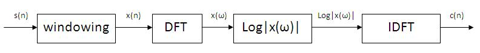
Figure 1: Block diagram representing computation of cepstrum
Figure 3 plots various stages in the cepstrum computation for an unvoiced frame. It can be observed that the variations in the lower quefrency region (near 0 axis) is due to vocal tract characteristics and the fast varying nature of the cepstrum towards the upper quefrency region represents the excitation characteristics of the short term speech segment. Methods have to be devised to extract to these vocal tract and excitation characteristics independently. For this purpose a liftering operation is performed in the quefrency domain. Following section describes about the liftering operation performed to extract the vocal tract and excitation features independently from the quefrency domain.
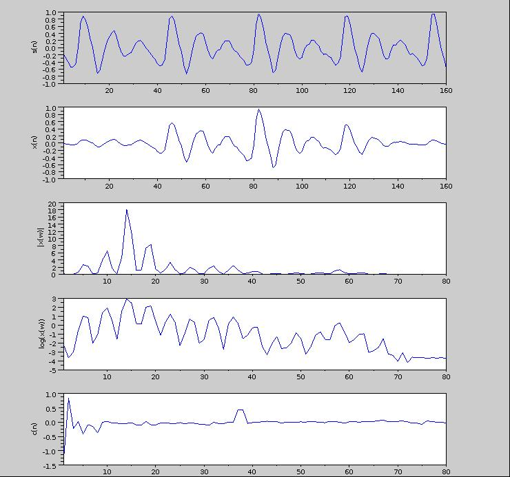
Figure 2: 20 ms voiced speech segment and its cepstrum
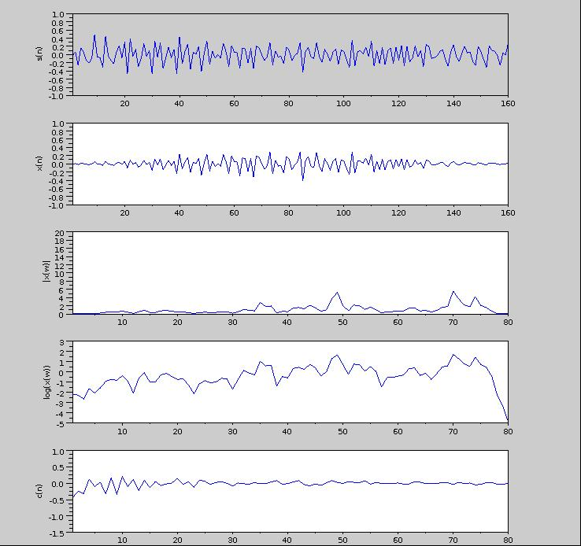
Figure 3: 20 ms unvoiced speech segment and its cepstrum
Liftering
Liftering operation is similar to filtering operation in the frequency domain where a desired quefrency region for analysis is selected by multiplying the whole cepstrum by a rectangular window at the desired position. There are two types of liftering performed, low-time liftering and high-time liftering. Low-time liftering operation is performed to extract the vocal tract characteristics in the quefrency domain and high-time liftering is performed to get the excitation characteristics of the analysis speech frame.
Low-time liftering for Formant estimation
Low-time liftering is used for estimating slow varying vocal tract characteristics from the computed cepstrum of the given speech sequence. The low-time liftering window used for extracting vocal tract characteristics can be represented as follows,

where Lc is the cut off length of the liftering window and N/2 is half the total length of the cepstrum. Usually Lc is used as 15 or 20. The vocal tract characteristics can be obtained by multiplying the cepstrum c(n) with the low-time liftering window as indicated in Eqn. (7).
ce(n) = we[n].c(n) (7)
The extraction of vocal tract characteristics is illustrated in Figure 8. Applying DFT on the low-time liftered sequence takes to its log magnitude spectrum which is the vocal tract spectrum of the given short term speech as given in Eqn. (8).
Log[|H(w)|] = DFT[ce(n)] (8)
The important vocal tract parameters like formant location and bandwidth can be computed from the vocal-tract spectrum. The formant locations can be estimated by picking the peaks from the smooth vocal tract spectrum. The block diagram given in Figure 4 shows the process of formant estimation using low-time liftering. Figure 5 shows the computation of low time liftering. Figure 6 shows the formants locations obtained from the peaks in the vocal tract spectrum.
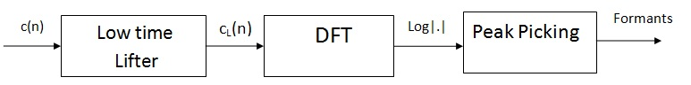
Figure 4: Block diagram representing low-time liftering
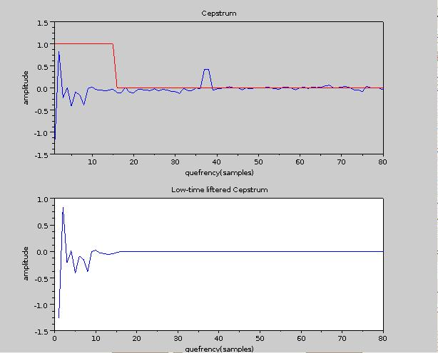
Figure 5: Low-time liftering: Cepstrum of a voiced segment and low-time liftering window (in red color) and vocal tract characteristics of the cepstrum obtained through the low-time liftering
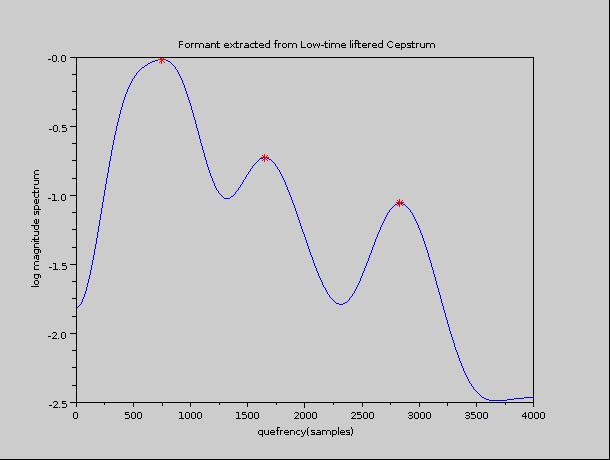
Figure 6: Formant locations from vocal tract spectrum
High-time liftering for pitch estimation
As the cepstrum computed from the analysis speech sequence is symmetric, half the length of the cepstrum is considered for the liftering. The excitation characteristic are obtained through a high time liftering operation using the following window,
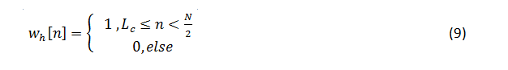
where Lc is the cut off length of the liftering window and N/2 is the half the total length of the cepstrum. Usually Lc is used as 15 or 20. The excitation characteristics are obtained by multiplying high time liftering window with the cepstrum obtained as given in Eqn. (7).
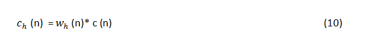
The block diagram given in Figure 7 indicates the high-time liftering process for pitch estimation. The computation of high-time liftered cepstrum from the cepstrum using high-time liftering window is given in Figure 8. Pitch can be estimated as the instant corresponds to the highest peak in the high-time liftered cepstrum. In the Figure 8, pitch period is the time instant corresponding to the largest peak in the high-time liftered cepstrum. The reciprocal of the pitch interval multiplied by the sampling frequency gives the pitch frequency of the analysis speech frame.
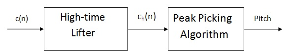
Figure 7: Block diagram representing high-time liftering
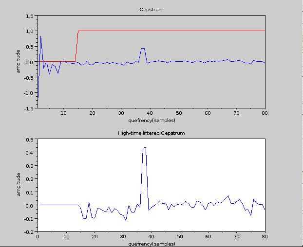
Figure 8: High-time liftering: Cepstrum of a voiced segment and liftering window (in red color) and vocal tract part of the cepstrum obtained through the high time liftering
Complex Cepstrum
The cepstrum computation discussed so far is known as the real cepstrum. As the real cepstrum is computed from the log magnitude spectrum, the phase part is ignored. This will not enable the reconstruction of the sequence from the cepstrum. However the reconstruction can be done by preserving the fourier phase and use it for reconstruction from the real cepstrum. For the reconstruction of the sequence from the cepstrum, complex cepstrum is used. Instead of taking inverse fourier transform of the log magnitude spectrum for the real cepstrum, the inverse fourier transform of the logarithm of complex spectrum is used for computing complex cepstrum. As the logarithm of all the spectral values are used, the phase is preserved in the complex cepstral sequence which can be used for reconstructing back the sequence. The methods for computing pitch and formant parameters from the complex cepstrum remain same as that of the real cepstrum as these parameters are obtained from the magnitude of the complex cepstral coefficients. Figure 9 shows the block diagram for complex cepstrum computation.
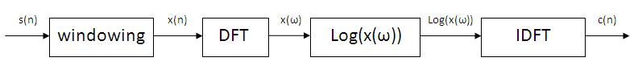
Figure 9: Block diagram representing complex cepstrum
The mathematical relation for computing complex cepstrum are as follow:
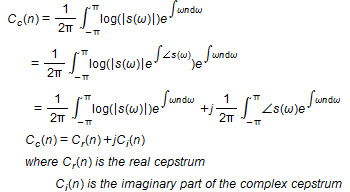
The basic definition of cepstrum using the log magnitude forms real part of the complex cepstrum derived above. Hence the name real cepstrum.